Gaussianization Flows#
from typing import Tuple, List, Callable
import numpy as np
import jax
from jax import lax
import jax.numpy as jnp
from jax.nn import log_sigmoid, logsumexp, log_softmax
from jax.nn.initializers import orthogonal
import treex
import tensorflow_probability.substrates.jax as tfp
tfd = tfp.distributions
from distrax._src.bijectors.sigmoid import Sigmoid
from distrax._src.distributions.normal import Normal
from sklearn.datasets import make_moons
import corner
import matplotlib.pyplot as plt
from matplotlib import cm
from sklearn.mixture import GaussianMixture
from tqdm.notebook import trange, tqdm
Data#
ntrain = 10_000
ntest = 10_000
noise = 0.1
random_state = 123
train_data = make_moons(n_samples=ntrain, noise=noise, random_state=random_state)[0]
test_data = make_moons(n_samples=ntest, noise=noise, random_state=random_state*10)[0]
fig = corner.corner(train_data, color="blue")
Gaussianization Flows#
Marginal Gaussianization#
Initialization#
def init_marginal_mixture_weights(
X: np.ndarray, n_components: int, covariance_type: str = "diag", **kwargs
):
"""Initialize means with K-Means
Parameters
----------
X : np.ndarray
(n_samples, n_features)
n_components : int
the number of clusters for the K-Means
Returns
-------
clusters : np.ndarray
(n_features, n_components)"""
weights, means, covariances = [], [], []
for iX in X.T:
clf = GaussianMixture(
n_components=n_components,
covariance_type=covariance_type,
**kwargs,
).fit(iX[:, None])
weights.append(clf.weights_)
means.append(clf.means_.T)
covariances.append(clf.covariances_.T)
weights = np.vstack(weights)
means = np.vstack(means)
covariances = np.vstack(covariances)
# do inverse param transformations
log_scales = tfp.math.softplus_inverse(jnp.sqrt(covariances))
prior_logits = jnp.log(weights)
return prior_logits, means, log_scales
PDF#
We are going to use the same function as before. The only difference is the we will use the PDF instead of the CDF of a Gaussian.
\[
\log \nabla U(x) = \sum_k^K \log \pi_k + \log \sum_k^K \mathcal{N}_{PDF}(x|\mu_k, \sigma_k)
\]
# num_mixtures = 4
# X = jnp.asarray(train_data)
# logit_weights, means, scales = init_marginal_mixture_weights(train_data, num_mixtures)
# logit_weights = jnp.log(weights)
# means = jnp.asarray(means)
# log_scales = jnp.log(scales)
# from
# from distrax._src.utils import
def sum_except_batch(x, num_dims=1):
'''
Sums all dimensions except the first.
Args:
x: Tensor, shape (batch_size, ...)
num_dims: int, number of batch dims (default=1)
Returns:
x_sum: Tensor, shape (batch_size,)
'''
return x.reshape(*x.shape[:num_dims], -1).sum(-1)
class GaussianMixtureCDF(tx.Module):
logit_weights: jnp.ndarray = tx.Parameter.node()
means: jnp.ndarray = tx.Parameter.node()
log_scales: jnp.ndarray = tx.Parameter.node()
num_mixtures: int
eps: float
max_iters: int
def __init__(self, num_mixtures: int = 5, eps: float = 1e-5, max_iters: int = 100):
self.num_mixtures = num_mixtures
self.eps = eps
self.max_iters = max_iters
def __call__(self, x):
if self.initializing():
# self.logit_weights = jnp.log(jnp.ones(x.shape[0], self.num_mixtures) / self.num_mixtures)
# self.means = jnp.ones(self.num_features, self.num_mixtures)
# self.log_scales = jnp.log(0.1 * jnp.ones((self.num_features, self.num_mixtures)))
# data-dependent initialization
logit_weights, means, log_scales = init_marginal_mixture_weights(
np.asarray(x),
n_components=self.num_mixtures,
)
self.logit_weights = jnp.array(logit_weights)
self.means = jnp.array(means)
self.log_scales = jnp.array(log_scales)
z = self.transform(x)
ldj = self.forward_log_det_jacobian(x)
return z, ldj
def transform(self, x: jnp.ndarray) -> np.ndarray:
return mixture_gaussian_cdf(x, self.logit_weights, self.means, self.log_scales)
def inverse_transform(self, z: jnp.ndarray) -> np.ndarray:
max_scales = jnp.sum(jnp.exp(self.log_scales), axis=-1, keepdims=True)
init_lower, _ = jnp.min(self.means - 20 * max_scales, axis=-1)
init_upper, _ = jnp.min(self.means + 20 * max_scales, axis=-1)
fn = lambda x: mixture_gaussian_cdf(x, self.logit_weights, self.means, self.log_scales)
x = bisection_inverse(
fn=fn, z=z, init_x=jnp.zeros_like(z),
init_lower=init_lower, init_upper=init_upper,
eps=self.eps, max_iters=self.max_iters
)
return x
def forward_log_det_jacobian(self, x):
ldj = mixture_gaussian_pdf(x, self.logit_weights, self.means, self.log_scales)
ldj = sum_except_batch(ldj)
return ldj
def mixture_gaussian_cdf(x, logit_weights, means, log_scales):
x = jnp.expand_dims(x, axis=-1)
log_weights = log_softmax(logit_weights, axis=-1)
dist = tfd.Normal(loc=means, scale=jnp.exp(log_scales))
z = jnp.sum(jnp.exp(log_weights) * dist.cdf(x), axis=-1)
return z
def mixture_gaussian_pdf(x, logit_weights, means, log_scales):
x = jnp.expand_dims(x, axis=-1)
log_weights = log_softmax(logit_weights, axis=-1)
dist = tfd.Normal(means, jnp.exp(log_scales))
z_pdf = logsumexp(log_weights + dist.log_prob(x), axis=-1)
return z_pdf
def bisection_inverse(fn, z, init_x, init_lower, init_upper, eps=1e-10, max_iters=100):
'''Bisection method to find the inverse of `fn`. Computed by finding the root of `z-fn(x)=0`.'''
def body(x_, lb_, ub_, cur_z_):
gt = (cur_z_ > z).astype(z.dtype)
lt = 1 - gt
new_x_ = gt * (x_ + lb_) / 2. + lt * (x_ + ub_) / 2.
new_lb = gt * lb_ + lt * x_
new_ub = gt * x_ + lt * ub_
return new_x_, new_lb, new_ub
x, lb, ub = init_x, init_lower, init_upper
cur_z = fn(x)
diff = float('inf')
i = 0
while diff > eps and i < max_iters:
x, lb, ub = body(x, lb, ub, cur_z)
cur_z = fn(x)
diff = jnp.max(jnp.abs((z - cur_z)))
i += 1
return x
num_mixtures = 4
# init bijector
mu_bijector = GaussianMixtureCDF(num_mixtures=num_mixtures)
# init data
x_init = jnp.array(train_data)
mu_bijector = mu_bijector.init(key=123, inputs=x_init)
# forward pass
z_mu, ldj = mu_bijector(x_init)
z_mu = mu_bijector.transform(x_init)
x_approx = mu_bijector.inverse_transform(z_mu)
params = mu_bijector.parameters()
params
WARNING:absl:No GPU/TPU found, falling back to CPU. (Set TF_CPP_MIN_LOG_LEVEL=0 and rerun for more info.)
GaussianMixtureCDF {
eps: 1e-05,
log_scales: jaxlib.DeviceArray((2, 4), float32), Parameter
logit_weights: jaxlib.DeviceArray((2, 4), float32), Parameter
max_iters: 100,
means: jaxlib.DeviceArray((2, 4), float32), Parameter
name: "gaussian_mixture_cdf", str
num_mixtures: 4,
}
# model
np.testing.assert_array_almost_equal(x_approx, x_init, decimal=5)
fig = corner.corner(np.array(x_init), color="red")
fig = corner.corner(np.array(z_mu), color="black")
fig = corner.corner(np.array(x_approx), color="blue")
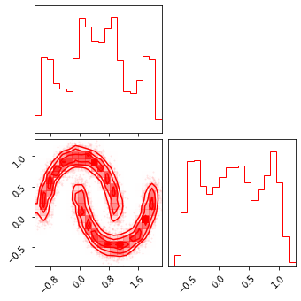
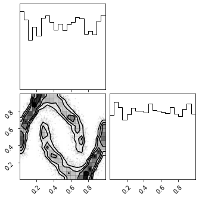
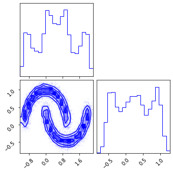
Inverse CDF#
def _clamp_preserve_gradients(x, min, max):
return x + lax.stop_gradient(jnp.clip(x, a_min=min, a_max=max) - x)
class InverseGaussCDF(tx.Module):
eps: float
def __init__(self, eps: float=1e-7):
self.eps = eps
# self.base_dist = tfd.Normal(loc=0, scale=1)
def __call__(self, x: jnp.ndarray) -> np.ndarray:
z = self.transform(x)
# ldj
ldj = - self.dist.log_prob(z)
ldj = sum_except_batch(ldj)
return z, ldj
def transform(self, x: jnp.ndarray) -> np.ndarray:
x = jnp.clip(x, self.eps, 1-self.eps)
# x = _clamp_preserve_gradients(x, self.eps, 1 - self.eps)
return self.dist.quantile(x)
def inverse_transform(self, z: jnp.ndarray) -> np.ndarray:
return self.dist.cdf(z)
def forward_log_det_jacobian(self, x):
# forward transform
z = self.transform(x)
# ldj
ldj = - self.dist.log_prob(z)
return sum_except_batch(ldj)
@property
def dist(self):
return tfd.Normal(loc=0, scale=1)
eps = 1e-5
# init bijector
icdf_bijector = InverseGaussCDF(eps=eps)
icdf_bijector = icdf_bijector.init(key=123, inputs=z_mu)
# forward pass
z_mg, ldj = icdf_bijector(z_mu)
z_mg = icdf_bijector.transform(z_mu)
x_approx = icdf_bijector.inverse_transform(z_mg)
np.testing.assert_array_almost_equal(x_approx, z_mu, decimal=5)
params = icdf_bijector.parameters()
params
InverseGaussCDF {
eps: 1e-05,
name: "inverse_gauss_cdf", str
}
fig = corner.corner(np.array(z_mu), color="red")
fig = corner.corner(np.array(z_mg), color="black")
fig = corner.corner(np.array(x_approx), color="blue")
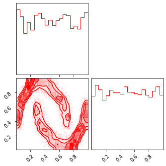
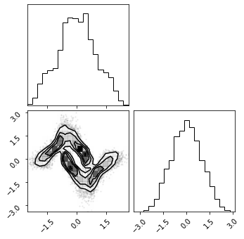
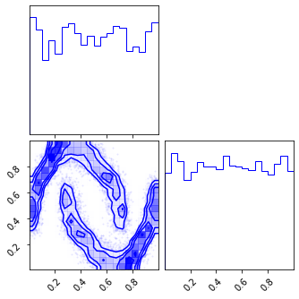
Random Rotations#
class RandomRotation(tx.Module):
V: jnp.ndarray
def __call__(self, x):
if self.initializing():
# random initialization
key = tx.next_key()
self.V = orthogonal()(key=key, shape=[x.shape[1], x.shape[1]])
z = self.transform(x)
ldj = self.forward_log_det_jacobian(x)
return z, ldj
def transform(self, x):
return jnp.dot(x, self.V)
def inverse_transform(self, x):
return jnp.dot(x, self.V.T)
def forward_log_det_jacobian(self, x):
return jnp.zeros_like(x[:,0])
# init bijector
rot_bijector = RandomRotation()
rot_bijector = rot_bijector.init(key=123, inputs=z_mg)
# forward pass
z_rot, ldj = rot_bijector(z_mg)
z_rot = rot_bijector.transform(z_mg)
z_mg_approx = rot_bijector.inverse_transform(z_rot)
np.testing.assert_array_almost_equal(z_mg_approx, z_mg, decimal=5)
params = rot_bijector.parameters()
params
RandomRotation {
V: jaxlib.DeviceArray((2, 2), float32),
name: "random_rotation", str
}
fig = corner.corner(np.array(z_mg), color="red")
fig = corner.corner(np.array(z_rot), color="black")
fig = corner.corner(np.array(z_mg_approx), color="blue")
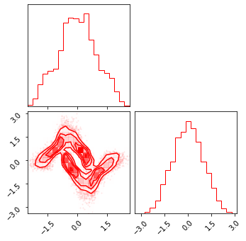
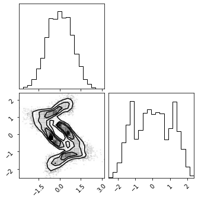
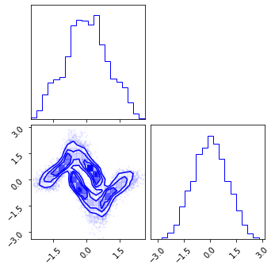
Composite Transformation#
So to have a flow model, we need two components:
Base Distribution: \(p_Z = \mathbb{P}_Z\)
This will describe the distribution we want in the transform domain. In this case, we will choose the uniform distribution because we are trying to uniformize our data.
Bijections: \(f = f_L \circ f_{L-1} \circ \ldots \circ f_1\)
The list of bijections. These are our functions which we would like to compose together to get our dataset.
class Composite(tx.Sequential):
def __call__(self, x: jnp.ndarray) -> jnp.ndarray:
return self.forward(x)
def forward(self, x):
# transform first layer
x, ldj = self.layers[0](x)
# loop through remaining layers
for ibijector in self.layers[1:]:
x, ildj = ibijector(x)
ldj += ildj
return x, ldj
def transform(self, x):
# loop through layers
for layer in self.layers:
x = layer.transform(x)
return x
def inverse_transform(self, x):
# loop through layers
for layer in reversed(self.layers):
x = layer.inverse_transform(x)
return x
# layer params
num_mixtures = 6
# create layers
bijector_block = [
# marginal uniformization
GaussianMixtureCDF(num_mixtures=num_mixtures),
# LogisticMixtureCDF(num_mixtures=num_mixtures),
# marginal gaussianization
InverseGaussCDF(),
# Logit(),
# orthogonal transform
RandomRotation(),
]
# multiply blocks
n_layers = 6
bijectors = bijector_block * n_layers
# create composite
model = Composite(*bijectors)
# init keys and data
x_init = jnp.array(train_data)
key_init = jax.random.PRNGKey(123)
# init layer params (data-dependent)
model = model.init(key=123, inputs=x_init)
params = model.parameters()
print(params)
Composite {
layers: list [
GaussianMixtureCDF {
eps: 1e-05,
log_scales: jaxlib.DeviceArray((2, 6), float32), Parameter
logit_weights: jaxlib.DeviceArray((2, 6), float32), Parameter
max_iters: 100,
means: jaxlib.DeviceArray((2, 6), float32), Parameter
name: "gaussian_mixture_cdf", str
num_mixtures: 6,
},
InverseGaussCDF {
eps: 1e-07,
name: "inverse_gauss_cdf", str
},
RandomRotation {
V: jaxlib.DeviceArray((2, 2), float32),
name: "random_rotation", str
},
GaussianMixtureCDF {
eps: 1e-05,
log_scales: jaxlib.DeviceArray((2, 6), float32), Parameter
logit_weights: jaxlib.DeviceArray((2, 6), float32), Parameter
max_iters: 100,
means: jaxlib.DeviceArray((2, 6), float32), Parameter
name: "gaussian_mixture_cdf", str
num_mixtures: 6,
},
InverseGaussCDF {
eps: 1e-07,
name: "inverse_gauss_cdf", str
},
RandomRotation {
V: jaxlib.DeviceArray((2, 2), float32),
name: "random_rotation", str
},
GaussianMixtureCDF {
eps: 1e-05,
log_scales: jaxlib.DeviceArray((2, 6), float32), Parameter
logit_weights: jaxlib.DeviceArray((2, 6), float32), Parameter
max_iters: 100,
means: jaxlib.DeviceArray((2, 6), float32), Parameter
name: "gaussian_mixture_cdf", str
num_mixtures: 6,
},
InverseGaussCDF {
eps: 1e-07,
name: "inverse_gauss_cdf", str
},
RandomRotation {
V: jaxlib.DeviceArray((2, 2), float32),
name: "random_rotation", str
},
GaussianMixtureCDF {
eps: 1e-05,
log_scales: jaxlib.DeviceArray((2, 6), float32), Parameter
logit_weights: jaxlib.DeviceArray((2, 6), float32), Parameter
max_iters: 100,
means: jaxlib.DeviceArray((2, 6), float32), Parameter
name: "gaussian_mixture_cdf", str
num_mixtures: 6,
},
InverseGaussCDF {
eps: 1e-07,
name: "inverse_gauss_cdf", str
},
RandomRotation {
V: jaxlib.DeviceArray((2, 2), float32),
name: "random_rotation", str
},
GaussianMixtureCDF {
eps: 1e-05,
log_scales: jaxlib.DeviceArray((2, 6), float32), Parameter
logit_weights: jaxlib.DeviceArray((2, 6), float32), Parameter
max_iters: 100,
means: jaxlib.DeviceArray((2, 6), float32), Parameter
name: "gaussian_mixture_cdf", str
num_mixtures: 6,
},
InverseGaussCDF {
eps: 1e-07,
name: "inverse_gauss_cdf", str
},
RandomRotation {
V: jaxlib.DeviceArray((2, 2), float32),
name: "random_rotation", str
},
GaussianMixtureCDF {
eps: 1e-05,
log_scales: jaxlib.DeviceArray((2, 6), float32), Parameter
logit_weights: jaxlib.DeviceArray((2, 6), float32), Parameter
max_iters: 100,
means: jaxlib.DeviceArray((2, 6), float32), Parameter
name: "gaussian_mixture_cdf", str
num_mixtures: 6,
},
InverseGaussCDF {
eps: 1e-07,
name: "inverse_gauss_cdf", str
},
RandomRotation {
V: jaxlib.DeviceArray((2, 2), float32),
name: "random_rotation", str
},
],
name: "composite", str
}
z = model(x_init)
z, ldj = model(x_init)
x_approx = model.inverse_transform(z)
np.testing.assert_array_almost_equal(x_approx, x_init, decimal=0)
fig = corner.corner(np.array(test_data), color="red")
fig = corner.corner(np.array(z), color="black")
fig = corner.corner(np.array(x_approx), color="blue")
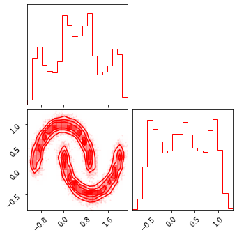
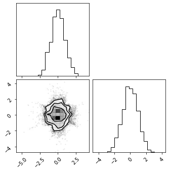
# class FlowModel(tx.Module):
# layers: tx.Sequential = tx.State.node()
# def __init__(self, layers, base_dist):
# self.layers = layers
# self.base_dist
# def __call__(self, x):
# return self.layers(x)
# def log_prob(self, x: jnp.ndarray):
# # forward propagation
# z, ldj = self.layers(x)
# # latent log prob
# return None
# def sample(self, shape):
# raise NotImplementedError()
Training#
Loss#
# base_dist = tfd.Normal(jnp.zeros(2), jnp.ones(2))
base_dist = tfd.MultivariateNormalDiag(jnp.zeros(2), jnp.ones(2))
# base_dist = tfd.Uniform()
# differentiate only w.r.t. parameters
def loss_fn(params, model, x):
# merge params into model
model = model.merge(params)
# forward transformation
z, ldj = model(x)
# latent prob
latent_prob = base_dist.log_prob(z)
# calculate log prob
log_prob = sum_except_batch(latent_prob) + sum_except_batch(ldj)
# calculate nll
loss = - jnp.mean(log_prob)
# the model may contain state updates
# so it should be returned
return loss, model
params = model.parameters()
loss, model_ = loss_fn(params, model, x_init)
loss
DeviceArray(1.1661366, dtype=float32)
Gradients#
grad_fn = jax.value_and_grad(loss_fn, has_aux=True)
(loss_, m_), grads_ = grad_fn(params, model, x_init)
loss_
DeviceArray(1.1661366, dtype=float32)
Train Step#
# both model and optimizer are jit-able
@jax.jit
def train_step(model, x, optimizer):
# select only the parameters
params = model.parameters()
(loss, model), grads = grad_fn(params, model, x)
# update params and model
params = optimizer.update(grads, params)
model = model.merge(params)
# return new model and optimizer
return loss, model, optimizer
Optimizers#
import optax
# learning rate
lr = 0.001
# scheduler (TODO)
optimizer = tx.Optimizer(optax.adam(lr)).init(model)
Training#
n_iterations = 20_000
losses = []
batch_size = 64
with trange(n_iterations) as pbar:
for i in pbar:
# train_data = get_toy_data(n_samples=batch_size, seed=i)
train_data = make_moons(n_samples=batch_size, noise=noise, random_state=i)[0]
ibatch = jnp.array(train_data)
loss, model, optimizer = train_step(model, ibatch, optimizer)
pbar.set_description(f"Loss: {loss:.4f}")
losses.append(loss)
2022-01-13 14:58:39.950953: E external/org_tensorflow/tensorflow/compiler/xla/service/slow_operation_alarm.cc:55]
********************************
Slow compile? XLA was built without compiler optimizations, which can be slow. Try rebuilding with -c opt.
Compiling module jit_train_step.11307
********************************
Results#
model = model.eval()
Losses#
fig, ax = plt.subplots()
ax.plot(losses)
plt.show()
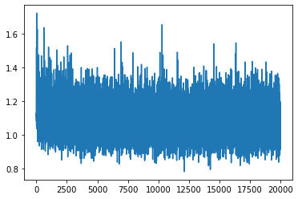
Latent Space#
z = model.transform(test_data)
fig = corner.corner(np.array(test_data), color="red")
fig = corner.corner(np.array(z), color="black")
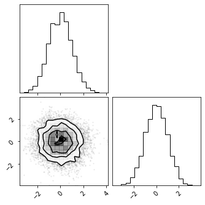
Inverse Transform#
x_approx = model.inverse_transform(z)
fig = corner.corner(np.array(x_approx), color="blue")
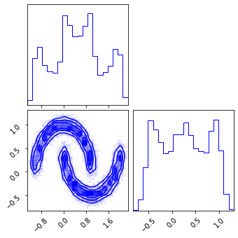
Generated Samples#
z_samples = base_dist.sample(sample_shape=(100_000), seed=key_init)
x_samples = model.inverse_transform(z_samples)
fig = corner.corner(np.array(test_data), color="red")
fig = corner.corner(np.array(x_samples), color="green")
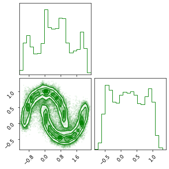
Density Estimation#
def generate_2d_grid(data: np.ndarray, n_grid: int = 1_000, buffer: float = 0.01) -> np.ndarray:
xline = np.linspace(data[:, 0].min() - buffer, data[:, 0].max() + buffer, n_grid)
yline = np.linspace(data[:, 1].min() - buffer, data[:, 1].max() + buffer, n_grid)
xgrid, ygrid = np.meshgrid(xline, yline)
xyinput = np.concatenate([xgrid.reshape(-1, 1), ygrid.reshape(-1, 1)], axis=1)
return xyinput
xyinput = generate_2d_grid(test_data, 500, buffer=0.1)
# forward transformation
z, ldj = model(xyinput)
# latent prob
latent_prob = base_dist.log_prob(z)
# calculate log prob
x_log_prob = sum_except_batch(latent_prob) + sum_except_batch(ldj)
# # Original Density
# n_samples = 1_000_000
# n_features = 2
# X_plot = load_data(n_samples, 42)
# X_plot = StandardScaler().fit_transform(X_plot)
# Estimated Density
cmap = cm.magma # "Reds"
probs = np.exp(x_log_prob)
# probs = np.clip(probs, 0.0, 1.0)
# probs = np.clip(probs, None, 0.0)
cmap = cm.magma # "Reds"
# cmap = "Reds"
fig, ax = plt.subplots(ncols=2, figsize=(12, 5))
h = ax[0].hist2d(
test_data[:, 0], test_data[:, 1], bins=512, cmap=cmap, density=True, vmin=0.0, vmax=1.0
)
ax[0].set_title("True Density")
ax[0].set(
xlim=[test_data[:, 0].min(), test_data[:, 0].max()],
ylim=[test_data[:, 1].min(), test_data[:, 1].max()],
)
h1 = ax[1].scatter(
xyinput[:, 0], xyinput[:, 1], s=1, c=probs, cmap=cmap, #vmin=0.0, vmax=1.0
)
ax[1].set(
xlim=[xyinput[:, 0].min(), xyinput[:, 0].max()],
ylim=[xyinput[:, 1].min(), xyinput[:, 1].max()],
)
# plt.colorbar(h1)
ax[1].set_title("Estimated Density")
plt.tight_layout()
plt.show()
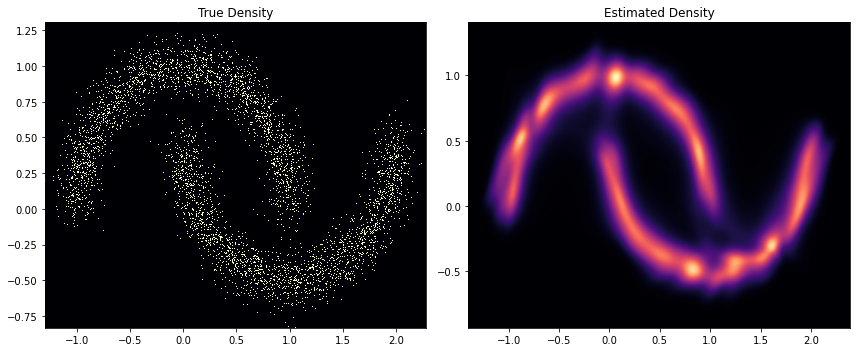